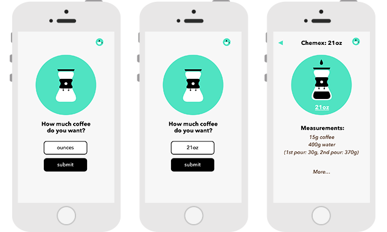
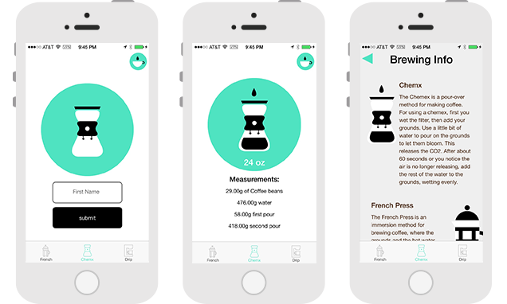

MakeMeCoffee
A simple calculator for making your best cup of coffee
This is a project I co-developed with Imanol Aranzadi after trying to explain a coffee routine involving very precise measurements.
This is a project I co-developed with Imanol Aranzadi after trying to explain a coffee routine involving very precise measurements.
We wanted to find a way to pre-program the ratios
for coffee grounds and water so that you could choose your brew method,
say how much coffee you wanted, and then get the correct measurements of
each ingredient.

It's important to me to do one thing and do it well, so we wanted to nail
this calculator part before adding any other functionality. There is an
info screen that has a little bit of information around brew methods, but
besides that the app is really simple and straightforward.
We have plans to submit it to the app store, so look for it soon!
